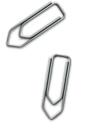
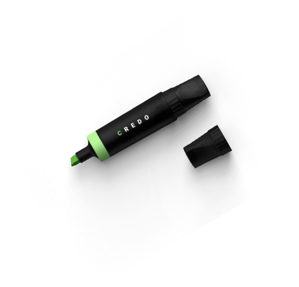

Бухгалтерские услуги от 500 грн в месяц
Наведем порядок в бухгалтерии, освободим время
и внимание владельца для
более важных дел
-
Бухгалтерский учёт
Бухгалтерский учет в полном объеме или отдельными частями. Формирование первичной документации.
Составление и сдача бухгалтерской, налоговой отчетности. -
Кадровый учет
Полное ведение кадрового делопроизводства, от приема на работу сотрудника, до его увольнения.
-
Управленческий учет
Подготовка финансовых показателей компании в удобном виде для финансового планирования. Покажем руководителю, как разобраться в управленческом учете и начать контролировать бизнес.
-
Оценка состояния бухгалтерского учета в компании
Позволяет достоверно и оперативно получить информацию о реальном состоянии бухгалтерии на предприятии. Устраним существующие недостатки в бухгалтерии, чтобы избежать штрафов при проверках.
-
Снижение налоговой нагрузки
Подберем для предприятия наиболее выгодную систему налогообложения, учитывая вид деятельности и возможность использования налоговых льгот не выходя за рамки закона.
-
Автоматизации бизнес процессов
Посоветуем и организуем установку программного обеспечения для автоматизации рабочих процессов, подходящую для вашей компании.
-

Юридические и Аудиторские услуги
Полный спектр юридических и аудиторских услуг для вашего предприятия.
-
Взаимодействие с бухгалтерией
Организуем работу бухгалтерии и отделов находящихся в коммуникации с ней так, чтобы каждый из сотрудников компании знал: кто, кому, когда, в каком виде и какие данные предоставляет.
-
Регистрация предприятия
Специалисты CREDO подготовят все необходимые документы для регистрации предприятия. Вам нужно только подъехать к нотариусу для подписи нужных бумаг.
-

Работаем с любой формой собственности в сфере
услуг и оптовой торговли. Поможем комплексно или возьмем на себя индивидуальный набор задач исходя из ваших потребностей
Почему содержать бухгалтерию
в штате уже не выгодно?
Тщательно подходите к выбору бухгалтера, избавиться от него потом будет практически невозможно. Существует анекдот:
"Бухгалтер не Му-му и тонет только вместе с Герасимом"Это касается именно штатных бухгалтеров, которых мало волнует их репутация перед другими своими клиентами, потому что других, кроме вас, у них нет.
- Человека, которому можно доверять, нужно еще поискать, потом обеспечить его рабочим местом и ввести в курс дела, привлечь сисадмина, который настроит компьютер и все необходимые программы, такие как 1С и M.E.DOC.
- Затем штатного бухгалтера нужно мотивировать, контролировать и следить за сроками сдачи отчетов, оплачивать курсы повышения квалификации, а также, налоги и отчисления c его заработной платы.
- Возможны перебои в работе, больничные, отпуска, декрет или неожиданное увольнение. Ни один штатный бухгалтер не возьмет на себя финансовую ответственность в виде штрафов за неправильно или не вовремя поданную отчетность, но решать конечно же вам.
С нами вы сэкономите до 50%
В сравнении со штатной бухгалтерией и получите целый ряд преимуществ
Алла Герасименко - учредитель компанииCredo Калькулятор стоимости
Целый ряд вкусных
преимуществ
Штрафы за не вовремя сданную отчётность и другие свои
ошибки мы берем на себя.
-
Не вгоняем в зависимость
Не садим клиента на бухгалтерскую иглу, если вы решите прекратить сотрудничество, не важно по какой причине – мы без лишних вопросов подготовим и передадим все обязанности вашему человеку: инструкции, электронные базы, оригиналы документов и т.д. Гарантируем конфиденциальность и защиту информации.
-
Регулярное
самообучениеРегулярно учимся и повышаем квалификацию. В случае изменений в законодательстве адаптируем бухгалтерский и налоговый учет под новые требования.
-
Сервер в Германии
Рабочие процессы
происходят на защищенном
сервере в Германии. -
Работаем с
лицензионными
программамиИспользуем только лицензионное программное обеспечение 1С , M.E.DOC и другие.
-
Помогаем при проверках
Отлично понимаем границы проверок со стороны государственных органов, потому готовы к защите ваших интересов. Наш адвокат проконтролирует правомерность действий.
-
12 лет
Ведения бухгалтерии
-
23
Предприятия на
обслуживании -
8000
Поданых отчетов в
налоговую -
0
Количество вирусов
«Petya A.» пропущенных
через установленный
нами M.E. Doc